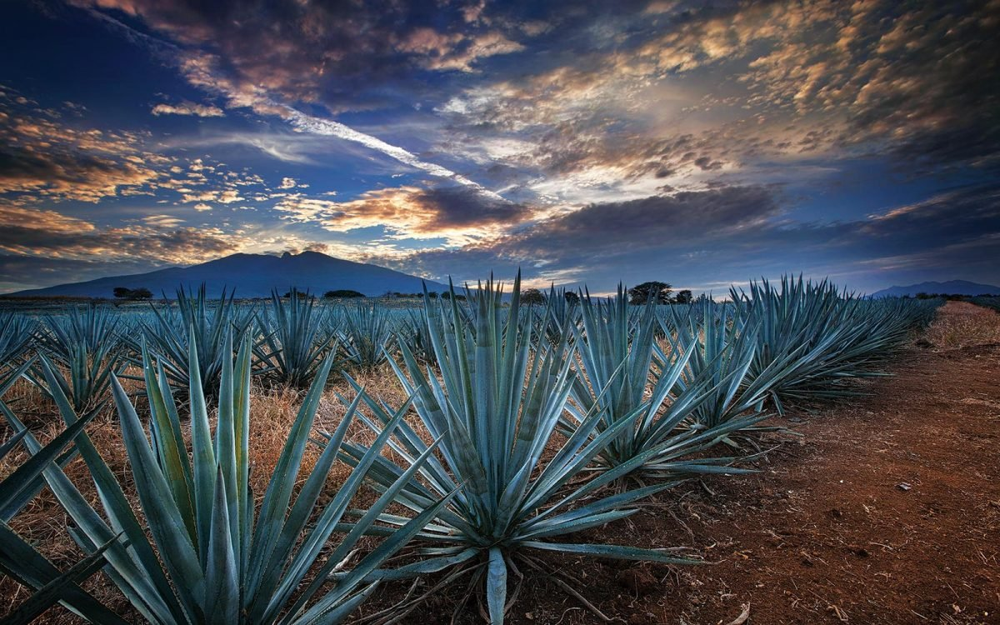
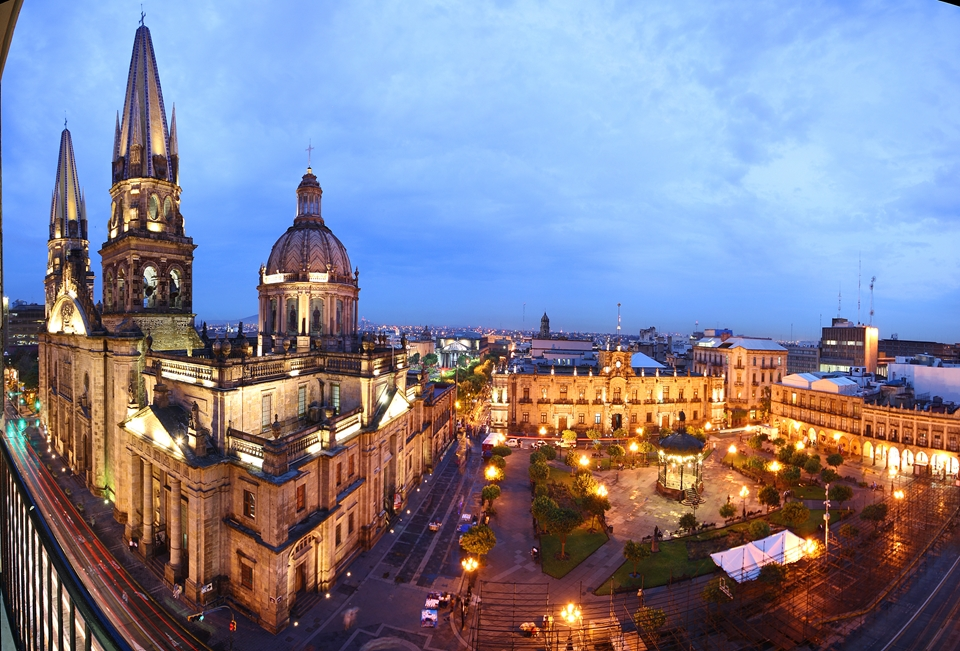
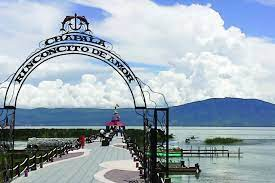
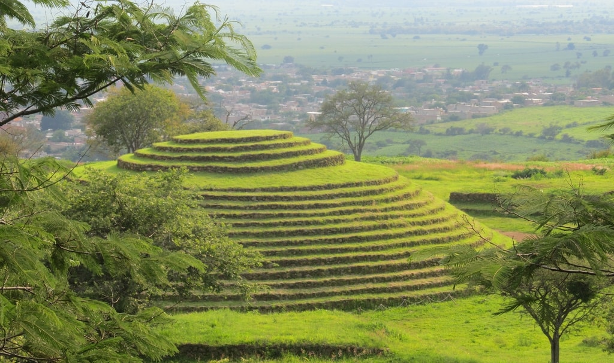
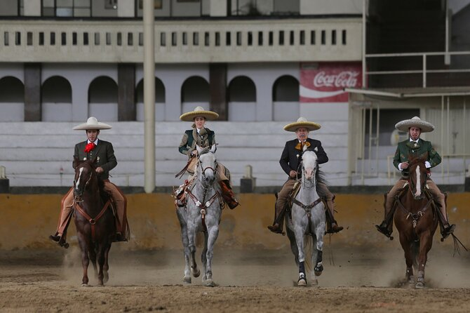
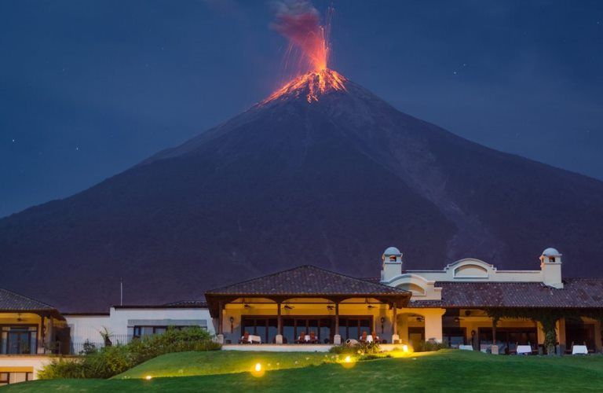

Guadalajara Jalisco :)
descubre el bello Jalisco

likes: 0
Tequila Pueblo magico
Experimenta la sensación de perderte entre los campos de agave azul. Descubre el origen del tequila, explora sus fabricas, admira su paisaje agavero declarado patrimonio natural de la humanidad por la UNESCO.

likes: 0
Centro de Guadalajara
Ubicado en el corazón de la ciudad de Guadalajara, el hotel One Guadalajara Centro Histórico se encuentra a tan solo unos minutos de los principales atractivos del destino como la Catedral Metropolitana, el Hospicio Cabañas y numerosos edificios históricos y comercios.

likes: 0
Lago Chapala
Preparen sus cámaras por que usted y sus acompañantes tendrán un día super completo, visitaran una Fabrica de Tequila, la rivera de Chapala, el Pueblo Mágico de Ajijic, tendrán el placer de degustar la mejor comida de la zona, así como recorrer el Lago de Chapala, el más grande de México, un día que sin lugar a dudas aprovecharan al máximo, de manera comoda, segura y divertida.

likes: 0
Piramides de Huachimontes
Aventurate por los senderos y descubre el pueblo de teuchitlán, lugar del dios antiguo. Explora las únicas y exclusivas pirámides circulares. Descubre el ritual del famoso juego de pelota. Conoce su historia narrada por un guía turístico quien además, te mostrará muchas actividades divertidas.

likes: 0
Tour Charro
Este maravilloso sitio se localiza en el extremo suroeste de la zona metropolitana de Monterrey, en el municipio de Santa Catarina y forma parte del Parque Nacional Cumbres de Monterrey.

likes: 0